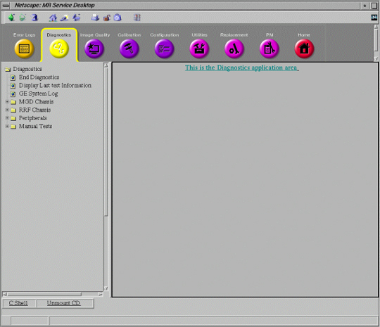
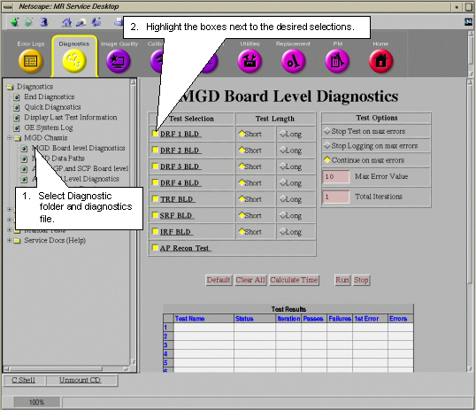
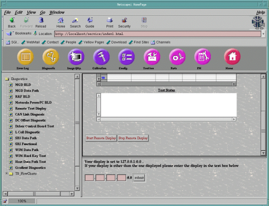
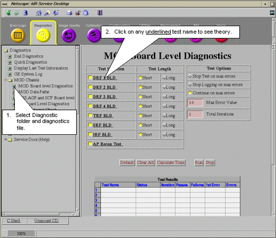
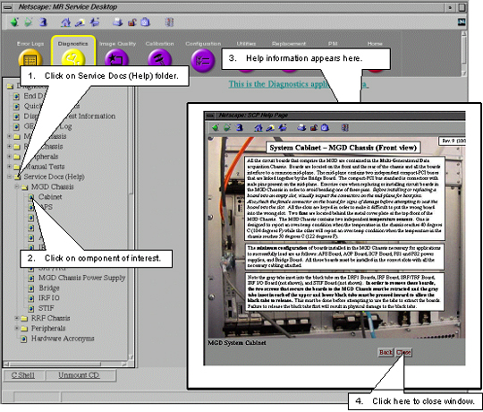
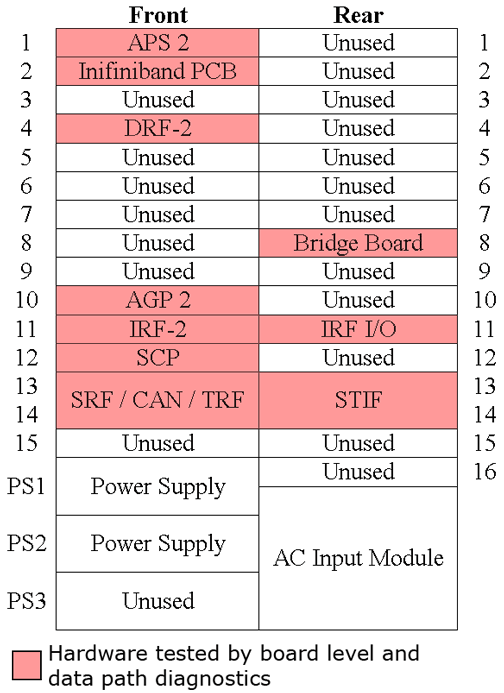

- 00000018WIA30882E20GYZ
- id_131075003.0
- Aug 29, 2019 1:33:12 AM
Diagnostics Overview
This document contains an overview of the following:
-
Introduction to Diagnostics: Introduction to Diagnostics
-
Accessing Diagnostics: Accessing Diagnostics
-
Running Tests: Running Tests
-
Exiting Diagnostics and Leaving Diagnostics Page: Exiting Tests
-
Accessing Test Theory and Help Information: Accessing a Test's Theory
-
Accessing Help Information: Accessing a Test's Help Information
-
Hardware Tested by Diagnostics: Hardware Tested by Diagnostics
Introduction to Diagnostics
Diagnostics (disk-based tests) check components in the System Cabinet and many of the peripheral hardware connected to those components. The diagnostics can be run only when Signa software is running and generally fit into one of three categories:
-
Board Level checks selected functions on a board.
-
Data Path checks the communication path(s) from one board or module to another.
-
Functional Check helps the FE gauge the functionality of the hardware. These don’t automatically diagnose a failure but rather provides an output or status change that the FE can detect. This
Accessing Diagnostics
Tests may be initiated individually. Click the Service Tools icon to open the Service Desktop Manager. On the Service Desktop Manager, if the Common Service Desktop (CSD) is not already displayed on the screen, select Service Browser and wait for the Common Service Desktop to appear. After a few seconds a window like Figure 1 will appear.

Click the Diagnostic tab at the top of the browser. The available tests will be listed in the column on the left as in Figure 2.

Running Tests
Selecting Tests
Select the tests you want to run in the Test Selection column on the right (see Figure 3). Some tests have test options that can be selected. Detailed information about these tests and their options can be found in the integrated help that can be accessed by clicking underlined hyperlinks (see Accessing Help Information).

Do not start multiple copies of tests. Multiple copies of tests can cause different anomalies such as locked-up diagnostic windows.
Short Test Length versus Long Test Length
Some tests allow you to choose between short and long test lengths. The short test usually performs a walking ones and walking zeroes pattern whereas the long test will perform a walking ones, walking zeroes, 0xaaaa, 0x5555, and possibly other patterns. As a result, selecting the long test will generally provide a longer and more exhaustive test. If the problem is highly intermittent then it may be desirable to run a long test.
Test Options
These options are only available with the proprietary tests.
-
To utilize Stop Test on Max Errors option, enter a number greater than zero (0) in Max Error Value. The test will stop when the number of test errors reaches this number.
-
To utilize Stop Logging on Max Errors option, enter a number greater than zero (0) in Max Error Value. The test will, as the name implies, stop logging error messages when the error count reaches this number.
-
When Continue on Max Errors is selected, it will run until stopped by the FE (default).
-
Total Iterations determines how many times the selected tests will run.
Test Control Buttons
-
Default: Selecting this will return the selections and options into a default condition.
-
Clear All: Deselects all selections.
-
Calculate Time: Clicking this button will provide you with an estimate of the total run time anticipated to complete all the selected tests.
-
Run: Click to start test execution on the selected components.
-
Stop: Click to stop execution of an active test.
Test Results Table
Test results are displayed in a table labeled Test Results which is located under the test control buttons (see Figure 4).

-
Test Name: Identifies test.
-
Status: Identifies the test as either pass or fail.
-
Iteration: Displays number of times test attempted to run.
-
Passes: Displays number of times test successfully completed.
-
Failures: Displays number of times test failed to complete successfully.
-
1st Error: Displays the first error encountered during testing.
-
Errors: Displays subsequent errors.
Test Status Window
Messages reporting on the status of the executing tests are displayed in this window.
Viewing the System Error Log
Leaving the Diagnostics tab will abort any tests that are running.
To the System Error log without aborting any tests a link to the GE System Error Log has been provided in the Diagnostics page.

Display Last Test Information
This tool allows the FE or Online Center to view tests that are currently running or, if no tests are running, the last tests that were run. Tests that are running or were last run are listed in the Test Results Chart. The Test Status Window below the Test Results Chart will show a date and time when the diags were started and when the diags completed. See Figure 6 and Figure 7.


-
The Start Remote Display button starts test execution.
-
The Stop Remote Display button ends test execution.
Exiting Diagnostics and Leaving Diagnostics Page
Leaving the diagnostics tab will abort any tests that are still running. A TPS Reset must be completed after any tests have been run before the system will permit scanning. There are two ways that this can be done.
End Diagnostic Testing
All tests can be ended and the TPS Reset from this window.

Attempt to Scan from Scan Desktop
If you leave the Toolbelt Desktop and go to the scan Desktop to setup a scan, a system prompt will ask for confirmation that you want to stop diags and perform a TPS Reset. After the reset successfully finishes, the system will permit scanning.

Accessing Test Theory and Help Information
In proprietary mode, a test's theory is available for many tests. Help information is also available concerning each of the components inside the System Cabinet.

See Figure 11 for descriptions of the displayed screens.
Clicking on any of the hyperlinks will open up a new browser window that contains the service documentation with the information requested. You can navigate within this window just as you would any Internet browser. This window operates independently of the Service Desktop so clicking hyperlinks in the documentation window will not affect the Service Desktop.

Accessing Help Information

Hardware Tested by Diagnostics
Diagnostics check components in the System Cabinet and many of the peripheral hardware connected to those components. The diagnostics generally fit into one of three categories:
-
Board Level checks selected functions on a board.
-
Data Path checks the communication path(s) from one board or module to another.
-
Functional Check helps the FE gauge the functionality of the hardware. These don’t automatically diagnose a failure but rather provides an output or status change that the FE can detect. This
Refer to table(s) below for a list of tested boards and peripheral hardware and how each can be tested. See Figure 13 for the location of the System Cabinet's tested boards.
| Board Level Diagnostics | Data Path Diagnostics | Functional Checks |
| CAN | CAN | |
| Coil ID | ||
| Driver Module | ||
| Gradient Subsystems | Gradient Subsystems | Gradient Subsystems |
| MDS | ||
| MGD | MGD | MGD |
| PHPS | ||
| RRF | RRF | |
| SCIM | SCIM | |
| SRI | SRI | |
| Shim Supply | Shim Supply | |
| SSM | ||
| TERM Server | ||
| UPM |
